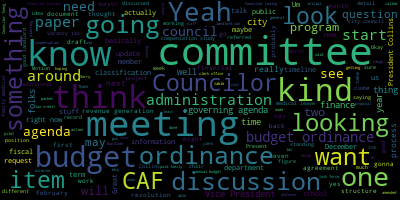
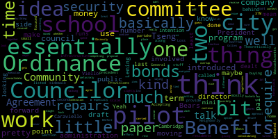

[Bears]: Medford City Council, Administration and Finance Committee, January 30th, 2024. Mr. Clerk, please call the roll.
[Collins]: Vice President Collins. Present. Councilor Lazzaro. Present.
[Tseng]: Councilor Leming.
[Bears]: Present.
[Leming]: Councilor Tseng.
[Bears]: Present.
[Leming]: President Bears.
[Bears]: Present. Five present, yes.
[Leming]: Councilor Keohokalole.
[Bears]: Yes, five present, none absent. Meeting is called to order and we welcome Councilor Callaghan, as all Councilors are welcome at all committee meetings, as they are technically all committees of the whole, but the voting members are the ones who were called, the role was called for. So this is our administration finance committee meeting. It's our first standing committee meeting under the new committee meeting structure. So it's exciting time. The action and discussion items for tonight are the same as for our other committees, which is the governing agenda document that was amended at the January 24, 2024 committee of the whole meeting, taking a look at that and more detail and more depth looking at each of the. Uh, items projects, major projects, ordinances, and other oversight engagement items on the governing agenda. And also some papers and committee have made it on to the agendas for these meetings. Mostly these are the ones from. 2022 and prior there may be papers and committee from 2023 that haven't made it on here yet and then there's also items on the governing agenda document that may have not made it onto papers and committee yet. Hopefully committee chairs can work with folks in the clerk's office and over the next meeting or two as the standing committees start to meet we can flesh this out, get all of the different papers that have been referred to all of the different committees onto the agendas, and then both the agenda and the tracking document in the clerk's office will be a great place for folks to look and see what has been referred to committee, what is kind of sitting on the table in committee for future discussion. So that's the intent here to start. I am hoping this will be somewhat of a model for tomorrow night's meetings and for meetings in two weeks for standing committee chairs It's really just to get our feet wet, start with the committee, look at everything that's been referred out to us, or that the council has said, hey, we think the committee is going to be working on this, and then we can go from there. But as the subcommittee on licensing, permitting, and signs will probably soon be aware, there are some things that are going to come up a little faster than that. So we'll be getting our feet wet and doing substantive business at the same time. So on action discussion items 24-006 resolution that each council committee review the 2024-2025 council governing agenda as amended at the January 24th, 2024 committee of the whole meetings. So I have here and I'll share my screen. Copy of that document, and if folks looked at the digital packets for this meeting, you'd see there's like, kind of a lot of supporting materials. We'll figure out exactly. The format in which these agendas are going to look like, or the packets are going to look like in the future, because right now they're including all of the supporting materials, even for items that are that are just on the table and the papers and committee and. that has created some pretty long agendas, so we may not want to have the packets look like that. But for this document, we're here in the Administration and Finance Committee, and we had a few items that we discussed. We had major projects, the annual budget process, revenue generation slash Proposition 2 1⁄2, classification and compensation study implementation. We had ordinances, budget ordinance, commercial vacancy tax, good landlord tax credit, local option. Community Benefits Agreement Ordinance, Percent for Art Ordinance, Paid Family Medical Leave, Extended Illness Leave Bank. And we also had some oversight and engagement around financial review and long-term budget planning and forecasting, and reviewing relevant city ordinances and regulations. So we have that from the governing agenda. We can take a look at it in a minute. We also had some papers in committee from previous councils. We had a paper from 2017 about a municipal mini bonds program. There's a paper from 2019, a recommendation to accept the provisions of general law, chapter 71, section 37 M, which is about school committee, school department, and city side sharing different financial and other staff. There's a resolution from 2020 that the council hire additional legal services. One of my resolutions to create a draft ordinance for a pilot commission is on payment in lieu of taxes, a draft ordinance around the extended illness leave bank, that's in the governing agenda, resolution on state paid family medical leave program, and a resolution to draft a budget ordinance for the city of Medford. So that was just some of the stuff from the papers and committee as well. But that, I think, is a general scope of everything that this committee is planning to take a look at this term. And I'm interested in folks, new members may have questions about some of these papers and committee from prior councils, or really just what folks are thinking, first glance, first thought, looking at the governing agenda and the agenda for this meeting. What are our questions? What are things we need to dig in deeper for? Are there, you know, requests for additional information or records from prior meetings that we want to kind of get on the table and make sure that everyone has all the information they need as we move forward? Councilor Lazzaro.
[Lazzaro]: As far as the papers that are in committee from prior councils, prior years, how do they come forward to be discussed as part of this committee?
[Bears]: So anything that's on here, someone could motion right now to kind of bring up one of these items. And if we wanted to take some sort of formal action on it, I think even just the fact that they're on the agenda that we're, you know, we're able to just talk about them. That's kind of the idea around this is committees could take up items that are on the table as needed. But also, you know, you could, as we've done on some of our regular meeting agendas already, The chair of the committee can say, hey, okay, I want to talk about the budget ordinance this this meeting this month. So I'm taking that from the papers and committee, and I'm moving that to the action and discussion item section of the agenda. And, you know, you could kind of have that ready to be discussed in a meeting.
[Lazzaro]: There is sort of an idea around the timing of things though, right, with the conversations we've been having about spreading stuff out. So do you have a thought in mind about how we should structure our kind of priorities for bringing up the What I'm getting at is I would like to see the background on all of this stuff, all of the stuff from the stuff that's tabled or in committee. I'd like to see all the background on this. But I don't want to try to see everything immediately, especially as we have these, especially like the extended leave with illness bank. I know at the family medical leave being something that we're going to sort of think about talking about 2025, right? Yeah. Those are things that I think are important. So, yes.
[Bears]: Yeah, I think, no, I get what you're saying. I think like there's kind of two pieces of it. Asking for the background information, pulling the records, et cetera. That's one thing. Once it's done, that can then be held for when it will be discussed. So like we can kind of get folks up to speed. And then, you know, actually saying, oh, I want to discuss this. I think the chairs would probably follow in some sense, these timelines that we've come up with. But I think it's good to get out there like earlier rather than later, rather than like, you know, we're two weeks ahead of the meeting when we want to talk about paid family medical leave. And it's like, oh, when did the council discuss this? What if, you know, put out those requests for information maybe, and we can work through the clerk's office or even make requests to the administrative staff to provide input if they have it. And then we have this paper record that builds up and then is available once we actually get into the discussion. I think we're also just going to figure this out as we move along, because it's definitely, you know, usually what would happen is be like, oh, OK, we're going to talk about this in a week or two. Let's immediately ask everyone to drop everything and start pulling research and papers from or asking for opinions and stuff like that. So I think, you know, we're kind of trying to figure that one out a little bit, too, at least from my standing. I don't know if other Councilors have thoughts on that or have thought about that. how they're gonna handle that for their own committees. Not seeing any right now. So yeah, I think going through this, we're going to be looking at the budget ordinance relatively soon. That's something I'm working with the administration to schedule for next month's meeting on February 27th. So that's one of the top priorities. We also had some stuff around revenue generation, classification and compensation study, annual budget process, kind of the start of the year. Councilor Leming.
[Leming]: Justin, from what you can remember in previous terms on council, do you know the, would you be able to offer the reason that some of these were left in committee so long? So if there's anything that, if there's anything specific comes to mind just to offer the historic context for that or a reason it just kind of dwindled. Is there anything that you know about personally?
[Bears]: Yeah, and Councilors Collins and saying, feel free to chime in here. So, for some of these, you can kind of see the in city council is the date that it was submitted. You know, what regular meeting so you could, and I tried to pull the records for most of these as best as I could and attach them in the digital packet. But in city council is when it was proposed initially, and then in committee is whenever a committee meeting was held on those issues, or if it was referenced or discussed in a committee meeting. So you can see that some ideas, you know, to be honest, I think some of this is purely organizing like things. There's just been stuff going back. All the way to 2016, 2017 papers and committee that had never had a committee meeting on them. Um, hadn't really been discussed. I know this municipal mini bonds program is, uh. Was proposed by Councilor care of yellow, but even from the resolution, I'm not 100% sure what its intent was. And at this point, it's 7 years old, but some of the other ones. Um. We're mine and I can certainly provide context on that the pilot commission. We had some early meetings on it. There is a draft ordinance somewhere, but just hasn't been made a priority in the last 2 councils to advance that ball. So it's just 1 of those things that's sitting with. some amount of work done, and if we want to pick it up, we could move it forward. Paid family medical leave, we had a discussion with the finance department in November 2022 about what the cost would look like. It's in the $500,000 to $600,000 a year range. And that's to cover all city and school employees. And then there's a range of, does the city just do the minimum that's required by the state program, or does it, pay 100% of the premium, et cetera. And there's just kind of a budget range there. But we basically got the cost estimate, and we haven't met on it since then. I think some of the reason for that is, is there $600,000 in the budget to start that program or not? Or would the mayor want to appropriate that? There's some bigger questions there, because technically, the way the law is written, the council could just enter the program. It's within our authority to adopt, to enter the state family medical leave program under Mass General Law. But then, of course, that creates a cascading impact on, I think, under my reading of it, and I don't know if council's reading would be the same, we could join it. The city would have to program it. It would have to enter the program and then Would the money be there? Would there have to be cuts in other parts of the budget to fund that program? I don't know. So there wasn't like a general consensus agreement that this is something we should do in the short term with the administration. So it kind of. sat in committee. And then the budget ordinance, you can see here, we met on five times in 2023. And there's committee reports attached to the agenda, as well as, I think, the latest track changes. Versions of the ordinance were attached to the agenda packet digitally, not in print, because this was a 74-page print packet. I figured maybe we don't all want that anymore. But if you look at the PDF, it's in there. And the administration is the last thing we left out in December as we're waiting for the response from the administration, which they're planning to send over to us in the next couple of weeks. And then we can meet on that as one item for our February meeting.
[Tseng]: Councilor Tseng. Yeah, I mean, I think that pretty much runs through most of the things that at least we dealt with on our council term last time. There are two of the papers in committee I've done a little bit of looking into in terms of what they are. So the mini bonds program that Councilor Caraviello-Viello introduced, the intention behind that was essentially Some of them in Cambridge have these programs where they work with a company called Neighborly to provide $1,000 bonds for residents to borrow money, basically partake in buying those bonds and essentially use that money for home repairs, sidewalk repairs, infrastructure related stuff mostly. Theoretically, you could use it for other things, but the company that they do it through, so the precedent that is set in Massachusetts is basically very much focused on small repairs along that scale. The second paper listed, Accepting the Provisions of Mass General Loss, 71, Section 37M, that one is about consolidating giving the city option to consolidate administration across the school side of things, the Bedford public schools and the city side of things. That one would require a vote of the school committee, the city council and the mayor's approval on it. So that one's much more involved and would require, essentially would require us to work with the school committee on the issue and to get everyone to a place where we agree. It was introduced back then because there was a desire to essentially make, to have the security director of the public schools the same as the security director of the city. So essentially to combine, like, kind of building security administration. Obviously, it just never got moved forward, maybe because of how involved the idea is, but that's just a bit of context on those two, on these two points. And I think Zach, or President Bears has covered the rest pretty well. I guess I'll continue talking to my president bears a little bit more time.
[Bears]: Sorry. Sorry. The clerk is informing me on how these were disposed of in the meeting in 2019. Um, yeah, so this, this, this was not advanced out of committee. The proposal, this was a proposal by the mayor, mayor Burke, um, to do the security director thing. Um,
[Tseng]: Slight kind of moving on very slightly, but still tied to an item in this list of papers committee. Your proposal for draft ordinance for the pilot commission is an idea that I think would be is very compelling for city. It's definitely a need, especially when we think about how our pilot. number one, how our pilot negotiations have historically turned out, and number two, how they're carried out in execution. I think it pairs really well with Councilor Collins and my idea on the Community Benefits Agreement Ordinance. I think there's a lot of overlap there, but also the Community Benefits Agreement Ordinance talks a little bit more about how to basically spend the benefits that we receive through those pilot agreements. And so, I think moving forward, it would be nice to pair those two efforts together. Great.
[Bears]: Thank you, Councilor Tseng. So that's some good context. And I did try to pull and figure out how to better distribute this information. And you can see here, this is hoping soon to be able to use this online portal for agenda and records. You can see kind of how convenient it is. get a meeting overview and see the attachments for each item. Lots of attachments for the budget ordinance, but it does help organize some of these files, at least for me. So yeah, as noted, budget ordinance, that's something we're looking at for our February 27th meeting. The other 3 items that we're looking at early here are the fiscal 25 annual budget process classification and compensation study and implementation revenue generation and prop 2 and a half planning. So, you know. for the FY25 annual budget process, I think it would be good for folks to look at the draft budget ordinances. I think we're relatively close on the timing of each spring, what the budget process will look like. The lingering questions on the budget ordinance more have to do with longer term financial planning. I don't know if Councilor Collins or Councilor Tseng, if you wanna add more specifics having been on that subcommittee as to what's outstanding around the budget ordinance. Councilor Calderon, Vice President Calderon.
[Collins]: Thank you. Yeah, I think that looking over the kind of the evolution of the draft ordinances will be most instructive for the newer councilors, but the original form of the ordinance spoke to both the annual budget process and also laid out a fairly prescribed structure for long-term budget planning, kind of revisiting five-year financial forecast regular intervals with the administration the same way as it creates a structure for looking at the annual operating budget with the administration every year. The administration has told us a lot about the various reasons why that is a difficult thing for them to operationalize at this point, but we still think that there's value in creating a kind of starter structure for how to begin to have those conversations in a regular way, even if we are not being as ambitious as the original form of the ordinance laid out. So to me, that is the most unfinished part of the ordinance, trying to figure out what can we start so that we are planting a seed for that kind of structure, while not legislating a process that the administration right now doesn't have the capacity to do every year.
[Bears]: Great, yeah, so I think that'll be something for us to take a look at. The track changes versions is part of the digital packet. When we get a response from the administration that week, the clerk will forward that along to the council. And then we will be able to start probably in, I believe the first dates in that are in March. in March for us to start looking at the fiscal 23, sorry, fiscal 25 budget. Probably get some initial financial updates from the finance department and start having meetings with departments around what we're looking at in terms of the fiscal 25 budget. So that'll be one item off the top of the list. And I think the goal is also to pass the budget ordinance around the same time that that process will start. Councilor Lazzaro.
[Lazzaro]: Just a procedural question. So do we need to do anything about the budget ordinance from this committee before it can go to the regular meeting on the 27th?
[Bears]: So it'll be in this meeting on the 27th. So it'll be the... Oh, this meeting? Yes.
[Lazzaro]: This is going to happen on February 27th again, and we'll talk about the budget ordinance, and then move it out, and then we'll talk about it in the regular meeting in March, probably.
[Bears]: Yeah, and this is where we... I think we have red lines. So you can see in here there's some pretty significant edits to the... to the initial proposal. But we get city council. So we'll have some stuff that we need to start doing in March to get recommendations out to the administration. We're going to be getting a schedule of preliminary budget meetings April 15 to May 15 with department heads. Mayor and the finance director are gonna provide an estimated budget allocation to the Medford Public Schools by March 1st. And so there's gonna need to be kind of a shot clock checklist here. And it may well be that we're gonna be, we may well be discussing now that I'm reading this, some of our budget recommendations on the, at the 20th, on the 27th as well. So, and this is, I was hoping we'd be done in December so that we'd have a kind of clear locked in timeline, but we're still negotiating some final details. But then we will get the comprehensive budget proposal by May 31st, and that will contain some additional information that we are. We're hoping for. One of the things that we really were discussing would be a huge benefit, I think, to the Council and the public is to see in each department budget just a top line number. Let's say that the fire department budget is increasing by $1 million. How much of that is because of fixed cost growth and how much of that is actually something new? Is it just contracts have gone up and the cost of X has gone up and Y has gone up? and that million dollar increase is really just paying for something that we already have? Or is there actually a new position or a new program or something else that is being funded in the budget? Because I think when we talk about biggest budget ever every year, I mean, yes, it's the biggest budget every year because inflation is going up every year. So, you know, is it really historic or is it actually just keeping up with inflation? Um, so that's we're going to have some budget related stuff hitting us relatively soon in February, at least the budget ordinance and maybe some. Some additional stuff beyond that, but there'll be fair warning to the committee and 2 Councilors who aren't on the voting members of the committee as well. The classification and compensation study, I don't know if, um. Councilor Collins, Councilor Tseng, if you want to speak to that at all. No. Basically, Vice President Collins.
[Collins]: Well, I know that this is something I was actually going to ask about President Bears, which is why I grimaced after I touched my microphone. The classification and compensation study is a project that the administration initiated with the Collins Center, if I have that right to take a look at how we are compensating the various roles in City Hall to try to get context on if things are roughly right, you know, and this is would inform the types of salaries that we're putting out in our attempt to keep positions filled by competitive candidates. So a question that I have is the status on how complete that study is. And then I believe that the implementation for this council would be in, because pay rates to an extent live in our code of ordinances, personnel ordinances, that would be something for us to take out of the study and implement through our personnel ordinances.
[Bears]: Yeah, that's pretty much my understanding. I think, you know, something that might be valuable would be to put out a motion to just request an update on when we can expect the study from the call-in center. And then we could get, you know, we could start reviewing that in earnest and how we can assist in the implementation process of updating the personnel ordinance and kind of what the timeline is on the administration side for when we can do that, Councilor Leming.
[Leming]: I was just going to comment that the city's had a couple of new hires even ever since January for a number of positions that I thought they were waiting to hear back on that compensation study before they move forward with hiring them. I mean, is it possible that some portion of it was already complete? There are just a lot of new hires for senior level positions and just across City Hall that we've been informed about. recently, so clearly some compensation, some agreement about compensation must have been reached with or without the study.
[Bears]: Yeah, so the positions are paid. There's a thing called a CAF. CAF is an acronym for something. It is not an acronym. Nobody knows. Nobody knows. Right. Right, yes, it's the CAF does not line up with compensation and classification, but that's basically. Yeah, something in any case. The CAFs, and they're not just CAFs, CAFs are one of the, actually several structures, are the tiers that the jobs sit in for what their compensation can be. And those are technically ordinances. So whatever the jobs were posted at, whatever CAF that they're in, CAF 13 being X amount of dollars to X amount of dollars, there's ranges and steps within them. Those people are basically what I'm saying is the people who were hired for those positions are working at whatever the CAF says, whatever CAF that position is in right now. And there's not really a lot of room for negotiation, other than maybe people can come in at a higher step of a CAF, for example. So I don't know what the administration, I actually don't know what For example, what step of what calf the economic development director was hired at, but it's not kind of an open negotiation. So that's basically what this is. My understanding is it's looking at the, the calf structure for city employees. There's also public works. set of classifications and compensation tiers for public works employees. And there's a couple of other ones as well. And looking at those and saying, are these competitive? Are we going to be able to bring in, are there positions that are sitting empty because their compensation is too low or they're at too low of a CAF level? That used to be available on MuniCode. If you go back to the 2017 MuniCode, you can see what the CAFs were in 2017. We've been working to try to get that back on MuniCode so that you can see that part of the ordinance online. And the administration has basically said, what we have now and what is existing is not in a condition that we'd want to upload it to MuniCode. So we want to do the study and create the new CAF structure. And then that's when we'll put that back onto the city ordinances. And I believe you have to go to the HR department to request the CAF Yeah, that's one ordinance that's not maintained in the clerk's office right now. So the only one, the clerk reminds me. So that's kind of how that is all working. And basically, that's why it's so important that we know when we get a timeline back from the administration. This has been going on for I think the first time we heard about this study was a couple of years ago. We may have even been before the last term. I kind of remember Chief of Staff, former Chief of Staff, Dave Rodriguez, mentioning it. So sometime in 2021.
[Leming]: Motion to request an update on the classification and compensation study.
[Bears]: Motion by Councilor Leming to request an update on the classification and compensation study. Do we want to put a time when we would like that? March. I see like four different ideas. I'm gonna go to Councilor Lazzaro, Vice President Collins, Councilor Sagan.
[Lazzaro]: I was just seconding.
[Bears]: Okay, just seconding Vice President Collins.
[Collins]: I was going to suggest perhaps to request the update come in a week before our next scheduled meeting of this committee. Okay. Which would be... by February 20th, if we go that route.
[Bears]: Yeah, I was gonna advise similarly. Okay, so on the motion of Council, let me request an update on the classification and compensation study seconded by Councilor Lazzaro, as amended by Councilor Collins, that that update come by February 20th. Great, and we'll hold that till the end of the meeting. Okay, all those in favor? All those opposed? Motion passes as amended. So okay, great. So we'll get an update on that. We'll have budget ordinance update for the next meeting. In terms of revenue generation, proposition two and a half planning, And I'm happy to go over it in more detail if requested, but there was an agreement budget agreement reached by President Morell and I with the mayor for the fiscal 24 budget. It included a variety of outcomes. 1 being we'll talk about the budget ordinance, which we've been doing another 1 being. the creation of a financial task force which would consist of members of the city council and the school committee and the city's finance administration. There have been two or three preliminary meetings of that task force and further meetings are immediately forthcoming to essentially say, this is the group, this is what its charge is, this is what its timeline is. So I'm a member of that task force, the vice president, the vice chair of the school committee, the finance director, the mayor. And so essentially, that's the group that's been meeting right now. We're going to figure out an announcement of that group in a more formal way with specific deadlines and timelines and thoughts. So, when it comes to the revenue generation and prop two and a half planning. The initial phase of that, I know that's an 18 month project on this agenda, but the initial phase. is stemming from that budget agreement, and there should be some more public information about that in the next month or so, I would say. And then that can kind of start to inform discussions that we need to have in this committee, discussions that the school committee is going to need to have around what's looking like right now. the MSBA process for the high school, what are our urgent operating budget needs, what are other major capital projects, and how do we wanna fund those looking at debt exclusions or operating budget overrides. So more to come on that. Once that release is out, I'm sure there'll be lots of questions and discussion. If folks do wanna talk about that in more detail, I'm happy to answer some more questions about the budget agreement, Councilor Lazzaro.
[Lazzaro]: I would just say that it feels like everything follows from whatever that announcement is going to be. Like, none of the rest of this stuff can happen until we have a clear timeline on a clear description of all of the larger amounts of money that may be coming down the pike for us. I think the greater transparency and the greater clarity we can have to share with the public, the sooner the better. I don't, I feel like I don't know. So I feel like people, just general Medford residents aren't, don't know anything. So I'm eager, I'm excited and eager to hear more about that. When do you think that announcement will be made?
[Bears]: I am hopeful by mid February. Great. It won't be like, this is what we're doing announcement as much as it does. This is what we're talking about doing announcement, but that's something. Yeah.
[Bears]: And I think too, it's probably fair to say it would not be likely would not be impactful on the fiscal 25 budget discussion, just given the timelines that would be needed to pass an override vote, for example. at least a good chunk of fiscal 25. So we have a number of other items on here that are not starting until next year or looking at, you know, a May start, but Any discussion on finance review, forecasting, commercial vacancy tax, good landlord tax credit? Has anyone taken a look at the ordinances relevant to this committee and said they're seeing something that they really want to update? I'll go to Councilor Leming.
[Leming]: Yeah, just it just seems like in general with a lot of a lot of the larger projects, those are those can be a little bit more difficult to pass forward in themselves without because, like, they're affected by outside factors. But for some of the some of the smaller things on this that are going to be pushed ahead by. uh individual Councilors so i know it was Councilor collins that proposed the good landlord tax credit the last meeting and i submitted uh for consideration at the upcoming meeting a resolution on the commercial vacancy tax um those seem like they can be pushed ahead sort of whenever uh there is time to do so at the admin and at these meetings um Barring progress on some of the, uh, some of the need to do, um. Things like the annual budget process and revenue generation property to an F planning. So, I'm talking to with regards to the. Vacancy tax specifically, um, I'm talking to some folks at the planning office about sort of best practices for doing that. But of course, that also does need that would also need to be voted on at the next regular meeting. Should, uh, should it pass there?
[Bears]: So to be referred to. Yeah. Great. And I want to throw out just 1 other idea and it just kind of has been percolating in my head. the vacancy tax, the good landlord credit, looking at the residential exemption, looking at potentially expanded exemptions and the Municipal Empowerment Act that the governor just filed and how much of that will pass. It might be worth having kind of a, you know, this question around the financial task force and revenue generation is a full scope discussion around the scale of additional revenue needs, I think, The questions around the landlord tax credit residential exemption, maybe even commercial vacancy tax, depending on how we can do that are kind of distributional questions about like, how should the burden be shouldered? And how should that be changed? So there might be kind of like 2 big bucket conversations around. We know we need more, this is what we're prioritizing for larger new revenue, but also there's a bunch of ideas floating around about using the tax system, the structure generally around the property tax to incentivize different behaviors and to distribute burdens differently. So that could be kind of one of those discussions as you were noting that since they all kind of impact each other and yeah.
[Leming]: Yeah, just to just add a question coming from a very new Councilor. So, how long what would you I know that I'm seeing the timelines on this on the, uh, the actual calendar there, but. So how long just taking the commercial vacancy tax, the landlord tax credit, which are two very new proposals, would you estimate it takes from going to that first resolution to somebody potentially paying that tax or receiving a tax benefit from that on the ground in real life and actually putting that into the budget?
[Bears]: Yeah, I mean, I think there's and I think that's why it might be good to bring in the assessor as well and have some conversations there. I don't know what the mechanism of the vacancy tax would be and if it's some sort of. charge on your two and a half levy bill or something. Basically, if there's anything that's related to rate setting of the property tax levy, those discussions need to happen well in advance of the December rate setting discussion. Like we just had one in December. I think several folks were there, councilors elected at the time were there. But I think, you know, for residential exemption, Ted and Ellen before Ted has said, you know, I need two extra assessors and I need six to 12 months to set that up. So that's a big one. I don't know if good landlord is maybe a little more targeted or if you want to do those both at the same time. So you might be looking at certainly the next rate setting in December 2025 for some of the simpler stuff, like if there's a bigger exemption for seniors. you know, that's an easier one to kind of work out. Cause we already have that in existence. Um, I would guess if we're talking about like the residential exemption combined with a good landlord tax credit, just like trying to tweak the whole distributional structure of the levy, probably December, 2020, uh, 2025, sorry, I'm getting my years, I'm ahead a year, I'm getting my fiscal years and calendar years confused, but December 24 and December 2025, depending on the scale. And then again, the vacancy tax, I'm not as sure on because I don't know what the mechanism is. If it's like, it's something separate, maybe it's something that can move faster because it's outside of all of the complexities of rate setting for Proposition 2.5. for how Prop 2.5 requires us to set the levy?
[Leming]: With the commercial vacancy tax, I don't think it would be, if it were implemented, it would specifically apply to vacant or effectively closed storefronts. the number of businesses that that would apply to would be very, very small compared to the number that would be applied to the good landlord tax credit, which could be hundreds of people around town. It would be much more targeted and it wouldn't be enough to significantly affect the total tax levy. It's more of an incentive and not a revenue generating mechanism.
[Bears]: We have a member of the public. You might need to press yeah.
[William Navarre]: William Navarre, 108 Medford Street, apartment 1B. I just wanted to chime in about the commercial vacancy tax and say one thing about that, and that is that I do not think that Prop 2 1⁄2 would affect that because Prop 2 1⁄2 is a limit on ad valorem taxes, whereas a vacancy tax, I suspect, would not be an ad valorem tax based on the assessment, but rather something else. So I just wanted to say that. That's the way Prop 2.5 is structured, it's based on an ad valorem tax, a tax upon the value. Thank you.
[Bears]: Thanks, William.
[Leming]: Great. So, although I'm not sure how much we're able to discuss something that hasn't been referred to committee, so if there's a... just, yeah, just pointing that out.
[Bears]: Yeah, I mean, it's on it's in the governing agenda document, which so and that's what we're supposed to be doing. But yeah, we can we can hold the details until it's formally been referred and until we have some people other than us doing our best. Yes. Vice President Collins, first time I've gotten that right.
[Collins]: Thank you. Yeah, I think it's an important point to make. I mean, in general, I think the point of these initial meetings and committees, the point of the governing agenda is to try to budget our work over this term to be manageable for Councilors and for projects to occur in the right order to be most effective. I think that the way that the various commercial vacancy tax, for example, these various exemptions that we've considered in the past, the new ones that we're considering, the way that those will intersect with a potential override or debt exclusion is kind of an interesting problem, kind of to the overall topic of like, then what order do we do things in, especially with the exemptions, which we know, the assessor's office requires like a fairly long runway. to be able to implement. I think that, I mean for myself, for the Good Lord and Lord Tax Credit, as that's a paper that I introduced, I think that the approach may be to study the issue, try to do the research, have the conversations, get our ducks in a row, perhaps like create some scenarios, and then as the conversations about revenue forecasting potential changes to property tax because of a debt exclusion or override, kind of have some scenarios ready to go. And of course, I think in some cases, we might want to deploy several strategies at the same time. If, for example, say we're doing a debt exclusion for a new high school, hypothetically, it occurs to me that that might be a thing that our finance department might say. let's sit down and consider these three to four financial mechanisms together instead of doing these very related things in separate channels. But I think that we can certainly pursue all of these projects in committee and really get our arms around the issue and study, could maybe create a set of if-then conditions for these various exemptions and new mechanisms.
[Bears]: Thank you, Vice President Collins. Any other further thoughts or discussion on what this committee is going to be looking at over the next 23 months?
[Collins]: Can you put the screen to Rebecca?
[Bears]: Sure.
[Collins]: For just a sec.
[Tseng]: Councilor Tseng? I think the only thing I would maybe want to add to this timeline at this point is to make sure that the draft pilot ordinance gets some time in there as well. We can talk about whether we talk kind of, as you were saying, you know, we have these buckets of work to work on that, you know, ideas are different, but possibly very similar genres of work. look at the Community Benefits Ordinance not being—putting up a pilot or something.
[Bears]: Thank you, Councilor Tseng. Give me one second here. You want to look at the draft timeline again? It sounds like there's a motion from Councilor Saint to add. Motion to add the pilot ordinance to the governing agenda. Got it. On the motion of Councilor Saint to add the pilot ordinance to the governing agenda, seconded by Vice President Collins. All those in favor? Aye. Opposed? Motion passes. And Councilor Collins, you wanted this back up?
[Collins]: Yeah, I just wanted to take a look, see if there's anything I was forgetting. I think in general, I feel pretty happy with the draft timeline. that we're looking at here in the governing agenda. I think that this, for the most part, organizes our projects in what I would consider a list of priority and also a list of urgency. It's very important to start implementing the classification and compensation study as soon as that data becomes available. It's, of course, the annual budget process. is fixed in the first half of each year. I think for the reasons we just discussed, it'll be important to discuss the commercial vacancy tax and the good landlord tax credit earlier rather than later, so that if those are things that we do want to deploy, we can do that. at a time that makes sense because they take a long time to implement. I think that that will set us up well for these other projects that we currently have slated for 2025, which of course are also very important. That's why they're up there. That's why they've been suggested by current Councilors, former Councilors, members of the community. But I think that this roughly follows order of need.
[Bears]: Great. Any further discussion? Any questions, any thoughts? Any comments from members of the public in the chamber or on Zoom? Seeing no one in the chamber, two standing at the podium and seeing no hands on Zoom. I think we are at an end.
[Leming]: Motion to adjourn? Second.
[Bears]: Motion by Vice President Collins to adjourn. Seconded by Councilor Leming. All those in favour? All those opposed? Motion passes and the meeting is adjourned.
|
total time: 31.03 minutes total words: 4987  |
total time: 5.87 minutes total words: 952 |
total time: 3.88 minutes total words: 563  |
total time: 4.11 minutes total words: 606 |
|
total time: 2.29 minutes total words: 351 |
|||
{kind=link}
{kind=link}
{kind=link}
{kind=link}
{kind=link}